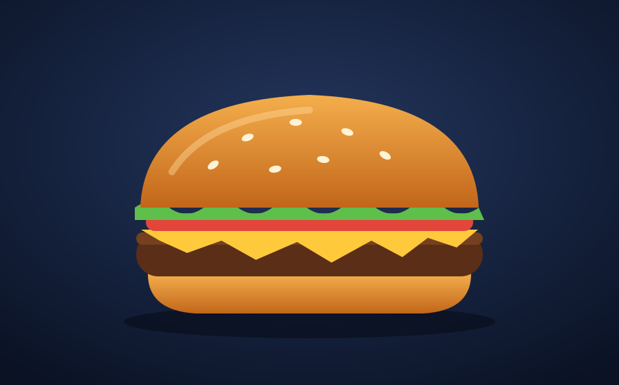

Pixel Burger
Pão brioche, blend 160g, queijo
R$ 29,90

Pão brioche, blend 160g, queijo
R$ 29,90
Duplo cheddar e cebola caramelizada
R$ 32,90
Porção crocante com páprica
R$ 16,90
Morango, baunilha e chocolate
R$ 18,90
Lata 350ml
R$ 7,90
Hambúrguer de grão-de-bico
R$ 27,90